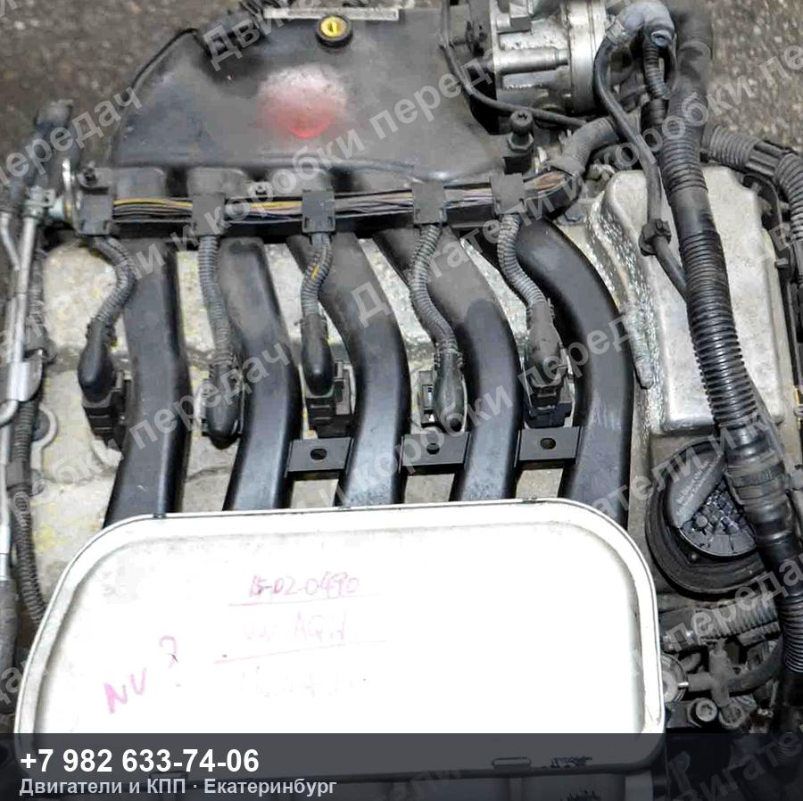
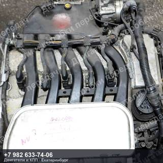
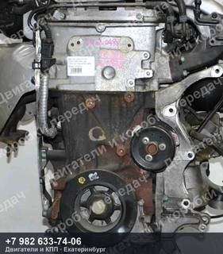
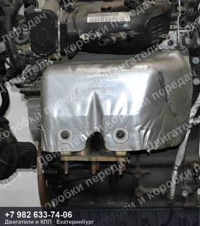
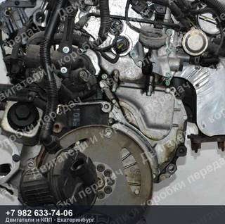
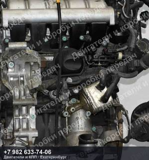
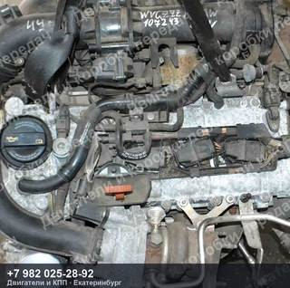
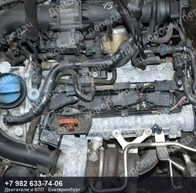
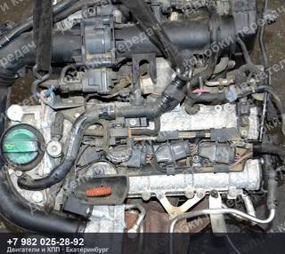
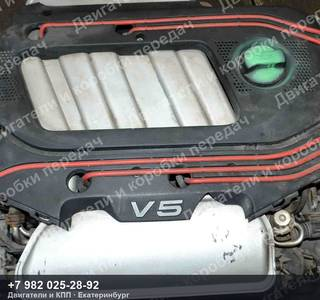

Контрактный двигатель Volkswagen BORA/GOLF/JETTA
66 500 ₽
Контрактный двигатель Volkswagen BORA/GOLF/JETTA — AQN, номер VR5.
Комплектация: без генератора, ГУР, кондиционера, натяжителя
| Марка | VOLKSWAGEN |
| Модель | BORA/GOLF/JETTA |
| Двигатель | AQN |
| Номер детали | VR5 |
| OEM-номера | 066100031C, 066100031CX, 066100031CV |
| Состояние | Б/у |
| Артикул | ДК-549828 |
Гарантия на проверку и установку · бесплатная доставка до транспортной компании ·
отправим фото и видео агрегата до оплаты
Контрактный двигатель Volkswagen BORA/GOLF/JETTA — что важно знать
Агрегат снят с автомобиля VOLKSWAGEN BORA/GOLF/JETTA. Двигатель AQN. Номер детали VR5. Подходящие OEM-номера: 066100031C, 066100031CX, 066100031CV.
Перед отправкой агрегат проверяем и фотографируем. Пришлём фотографии и видео работы именно этого экземпляра, поможем проверить совместимость по VIN вашего автомобиля. Отправка из Екатеринбурге до транспортной компании — бесплатно, дальше — любой ТК до вашего города.
Похожие агрегаты Volkswagen

Контрактный двигатель Volkswagen BEETLE/EOS/GOLF/JETTA/SCIROCCO/TOURAN
1.4 л, 140 л.с., CAV/CAVC, пробег 44 000 км
160 000 ₽

Контрактный двигатель Volkswagen BEETLE/EOS/GOLF/JETTA/SCIROCCO/TOURAN
1.4 л, 160 л.с., CAV/CAVD, номер 7DSG
133 000 ₽

Контрактный двигатель Volkswagen BEETLE/EOS/GOLF/JETTA/SCIROCCO/TOURAN
1.4 л, 160 л.с., CAV/CAVD, номер 7DSG
133 000 ₽

Контрактный двигатель Volkswagen BORA/GOLF
150 л.с., AGZ, пробег 26 000 км
160 000 ₽